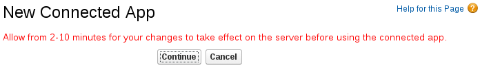
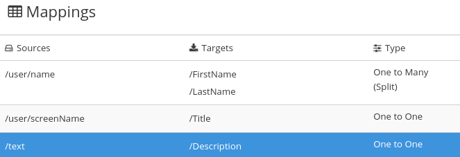
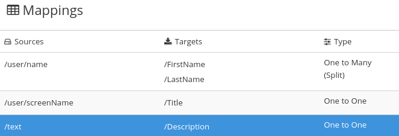

Implementing the Twitter to Salesforce sample integration
This sample integration watches Twitter for tweets that mention a particular Twitter user. When the integration finds such tweets, it filters them so that only those tweets that contain the text that you specify cause the integration to continue.
For tweets that contain the specified text, the integration passes data related to the tweet, including the Twitter user name, to Salesforce and Salesforce creates a new contact.
-
You need a Twitter developer account. If you do not already have one, go to https://apps.twitter.com, sign in to Twitter, and click Apply for a developer account. Obtaining the developer account is quick when you provide a professional email address, such as
me@redhat.comrather than a personal address such asyou@gmail.com. -
You need an account in a Salesforce installation that is used for development. This account must have Salesforce API access, which is available in a Salesforce Enterprise account or a Salesforce Developer account. To obtain a free developer account, visit https://developer.salesforce.com/signup. It takes less than two minutes to obtain a Salesforce account.
To implement, deploy, and test this sample integration, the main steps are:
Registering {prodname} as a Twitter client application
In an integration, to connect to Twitter, the first thing you must do is register your {prodname} environment as a client application that can access Twitter. This lets you create any number of integrations that connect to Twitter. In other words, you need to register a particular {prodname} environment with Twitter only once.
In each {prodname} environment, there can be only one registration of {prodname} as a Twitter client application. However, while each Twitter connection uses the same registration, it can use different user credentials.
You are logged in to {prodname}.
-
In {prodname}:
-
In the left panel, click Settings.
-
On the Settings page, near the top, to the right of the callback URL, click
 to
copy the callback URL for your installation of {prodname} to the clipboard.
You will need this URL later in this procedure.
to
copy the callback URL for your installation of {prodname} to the clipboard.
You will need this URL later in this procedure. -
Click the Twitter entry to display the Consumer API Key and Consumer API Secret Key fields.
-
-
In another browser tab, go to your Twitter developer account, sign in if you need to, and do the following:
-
In the upper right, next to the name of your developer project, click the down caret and click Apps.
-
In the upper right, click Create an app.
-
In the App name field, enter a name such as My {prodname} Client.
-
In the Application description field, enter a tip such as For leveraging tweets.
-
In the Website URL field, paste the URL that you copied at the beginning of this procedure and remove
api/v1/credentials/callbackfrom the end of the URL. -
Select Enable Sign in with Twitter.
-
In the Callback URLs field, paste the URL again. It should be something like this:
https://app-proj912876.7b63.{prodnameinurl}.openshiftapps.com/api/v1/credentials/callback.You can skip the next few fields.
-
Tell us how this app will be used requires a 100-character description. For convenience, you can copy and paste:
This is a demo application so that I can evaluate how to integrate Twitter with my enterprise applications. -
Click Create.
-
Click Create again to confirm that you reviewed the developer terms.
-
At the top of the page for the app you just created, click the Keys and tokens tab.
-
Copy the consumer API key.
-
-
Return to your {prodname} Settings page and paste the Twitter consumer API key into the {prodname} Twitter Consumer API Key field.
-
Return to the Twitter Keys and tokens tab and copy the consumer API secret key.
-
Return to your {prodname} Settings page and paste the Twitter consumer API secret key into the {prodname} Twitter Consumer API Secret Key field.
-
Click Save.
-
Click the Twitter entry to collapse it.
Creating a Twitter connection
To create an integration that obtains data from Twitter, you must first create a Twitter connection. After you create a Twitter connection, you can use it in any number of integrations.
-
You are logged in to {prodname}.
-
{prodname} is open in a web browser.
-
You registered your {prodname} environment as an application that can access Twitter.
-
You added the Twitter consumer API key and consumer API secret key that you received after registration to the {prodname} Settings page.
-
In {prodname}, in the left panel, click Connections to display any available connections.
-
Click Create Connection to display the available connectors. A connector is a template that you use to create one or more connections.
-
Click the Twitter connector.
-
Click Connect Twitter to display a Twitter authorization page. You might need to log in to Twitter before you see the authorization page.
If Connect Twitter does not appear, then your {prodname} environment is not registered as a Twitter client application. See Registering {prodname} as a Twitter client application. When you try to create a Twitter connection and your {prodname} environment is not registered as a Twitter client application, then {prodname} displays multiple fields that prompt for authorization information. While you can create a Twitter connection by entering values in these fields, it is not recommended.
-
Click Authorize app to return to {prodname}.
-
In the Name field, enter your choice of a name that helps you distinguish this connection from any other connections. For example, enter
Twitter Connect 1. -
In the Description field, optionally enter any information that is helpful to know about this connection. For example, enter
Sample Twitter connection that uses my Twitter login credentials. -
Click Save to see that the connection you created is now available. If you entered the example name, you would see that Twitter Connect 1 appears as a connection that you can choose to add to an integration.
Registering {prodname} as a Salesforce client application
In an integration, to connect to Salesforce, the first thing you must do is register your {prodname} environment as a client application that can access Salesforce. This lets you create any number of integrations that connect to Salesforce. In other words, you need to register a particular {prodname} environment with Salesforce only once.
In each {prodname} environment, there can be only one registration of {prodname} as a Salesforce client application. However, while each Salesforce connection uses the same registration, it can use different user credentials.
If you already registered {prodname} as a Salesforce client and created a Salesforce connection, skip to Creating and deploying the Twitter to Salesforce integration.
You are logged in to {prodname}.
-
In {prodname}:
-
In the left panel, click Settings.
-
On the Settings page, near the top, to the right of the callback URL, click
to
copy the callback URL for your {prodname} environment to the clipboard.
You will need this URL toward the end of this procedure. -
Click the Salesforce entry to display the Client ID and Client Secret fields.
-
-
In another browser tab, log in to your Salesforce account and follow the steps below to create a connected app. These instructions assume that you are using the Salesforce Classic user interface. To switch from the Salesforce Lightning Experience interface, click your profile icon and select Switch to Salesforce Classic. For additional information, see the Salesforce documentation for Create a Connected App.
-
In Salesforce, in the upper right, click Setup.
-
In the left panel, select Build > Create > Apps.
-
Scroll down to Connected Apps and click New.
-
Enter the required information and then select Enable OAuth Settings.
-
In the Callback URL field, paste your {prodname} URL, which you copied at the beginning of this procedure. For example:
https://app-proj912876.7b63.{prodnameinurl}.openshiftapps.com/api/v1/credentials/callback. -
For OAuth Scopes, add:
-
Access and manage your data (api)
-
Allow access to your unique identifier (openid)
-
Perform requests on your behalf at any time (refresh_token, offline_accesss)
-
-
Select Configure ID token and then Include Standard Claims.
-
Scroll down and click Save.
-
Scroll up to see that Salesforce indicates a short wait: 
-
Click Continue.
-
Copy the consumer key that Salesforce provides.
-
-
Return to your {prodname} Settings page and paste the Salesforce-provided consumer key into the {prodname} Salesforce Client ID field.
-
Return to Salesforce and copy the consumer secret that Salesforce provides.
-
Return to your {prodname} Settings page and paste the Salesforce-provided consumer secret into the {prodname} Salesforce Client Secret field.
-
Click Save.
-
Click the Salesforce entry to collapse it.
Creating a Salesforce connection
To create an integration that accesses data in Salesforce, you must first create a Salesforce connection. After you create a Salesforce connection, you can use it in multiple integrations.
-
You are logged in to {prodname}.
-
{prodname} is open in a web browser.
-
You must have already registered your {prodname} environment as an application that can access Salesforce.
-
You added the Salesforce client ID and client secret that you received after registration to the {prodname} Settings page.
If you did not already register {prodname}, see Registering {prodname} as a Salesforce client application.
Be sure to wait 2 - 10 minutes after registering your {prodname} installation as a Salesforce client before you try to create a Salesforce connection.
-
In {prodname}, in the left panel, click Connections to display available connections.
-
Click Create Connection to display the available connectors. A connector is a template for creating one or more connections.
-
Click the Salesforce connector.
-
Click Connect Salesforce to display a Salesforce authorization page. You might need to log in to Salesforce before you see the authorization page.
If Connect Salesforce does not appear, then your {prodname} environment is not registered as a Salesforce client application. See Registering {prodname} as a Salesforce client application. When you try to create a Salesforce connection and your {prodname} environment is not registered as a Salesforce client application, then {prodname} displays multiple fields that prompt for authorization information. While you can create a Salesforce connection by entering values in these fields, it is not recommended.
The following error indicates that Salesforce does not have the correct {prodname} callback URL:
error=redirect_uri_mismatch&error_description=redirect_uri%20must%20match%20configurationIf you get this error message, then in Salesforce, ensure that the {prodname} callback URL is specified according to the instructions in Registering {prodname} as a Salesforce client application.
-
Click Allow to return to {prodname}.
-
In the Name field, enter your choice of a name that helps you distinguish this connection from any other connections. For example, enter
SF Connect 1. -
In the Description field, optionally enter any information that is helpful to know about this connection. For example, enter
Sample Salesforce connection that uses my Salesforce login credentials. -
Click Save to see that the connection you created is now available. If you entered the example name, you would see that SF Connect 1 appears as a connection that you can choose to add to an integration.
Creating and deploying the Twitter to Salesforce sample integration
To create and deploy an integration that uses the Twitter and Salesforce connections that you created, the main steps are:
-
You registered your {prodname} environment as a Twitter client and created a {prodname} Twitter connection.
-
You registered your {prodname} environment as a Salesforce client and created a {prodname} Salesforce connection.
-
{prodname} is open and you are logged in.
Choosing the start connection
In {prodname}, to create the sample Twitter to Salesforce integration, the first task is to choose the start connection.
-
You created a Twitter connection.
-
On the left, click Integrations.
-
Click Create Integration.
-
On the Choose a connection page, click the Twitter connection that you created. If you gave it the example name, you would click Twitter Connect 1. When the integration starts, it uses the credentials defined in this connection to connect to Twitter.
-
On the Choose an action page, to the right of the Mention action entry, click Select.
-
On the Configure the action page, click Next. No configuration is required.
When the integration is running, after connecting to Twitter, the integration monitors Twitter for mentions that include your Twitter screen name. A match triggers the next step in the integration. However, before you add steps that operate on data between connections, you choose the connection that the integration uses to finish its work.
Choosing the finish connection
In {prodname}, to continue creating the Twitter to Salesforce sample integration, after you add the start connection, you add the finish connection to the integration.
-
You added the Twitter connection to the integration as the start connection.
-
{prodname} is prompting you to add the finish connection.
-
You created a Salesforce connection.
-
On the Choose a connection page, click the Salesforce connection that you created. If you gave it the example name, you would click SF Connect 1. This integration finishes by using the credentials defined in this connection to connect to Salesforce.
-
On the Choose an action page, to the right of the New record entry, click Select.
-
On the Configure the action page, click in the Object name field and select Contact as the Salesforce record to create.
-
Click Next to add the finish connection to the integration.
Adding a basic filter step
In {prodname}, to continue creating the Twitter to Salesforce sample integration, add a basic filter step that checks tweets that mention you for particular content. At integration execution time, processing continues only if that content is present.
-
You added the Twitter connection as the integration’s start connection.
-
You just added the Salesforce connection as the integration’s finish connection.
-
In the integration visualization, click the plus sign, which displays the steps that you can add to the integration.
-
Click Basic Filter.
-
In the Property Name field, start to enter
textand whentextappears below the field, click it. The Twittertextfield, which contains a tweet, is the data that you want the filter to evaluate. -
In the Operator field, accept contains as the condition to be met for the integration to continue.
-
In the Keywords field, enter
#RedHatIsGreator some other text that you choose for the value to check for. A tweet that mentions you must contain the text you enter here for the integration to continue operating on this data. -
Click Done to add the basic filter step to the integration.
Adding a data mapping step
To continue creating the Twitter to Salesforce sample integration, add a data mapping step that correlates Twitter mention fields to Salesforce contact fields.
-
The integration’s start connection is to Twitter.
-
The integration’s finish connection is to Salesforce.
-
You just added the filter step between the two connections.
-
In {prodname}, in the integration visualization, click the plus sign that is between the filter step and the finish connection.
-
Click Data Mapper and wait a few moments. When the data fields appear, the Sources panel on the left displays the Twitter fields and the Target panel on the right displays the Salesforce fields.
-
Map the Twitter
namefield to the SalesforceFirstNameandLastNamefields:-
In the Sources panel, click the magnifying glass
 to display the search field and enter
to display the search field and enter name. -
Under the
userfolder, click thenamefield. -
In the Target panel, scroll down and click FirstName. The data mapper displays a line from the source name field to the target FirstName field.
-
In the Target panel, scroll down, hover over LastName, press CTRL-Mouse1 (CMD-Mouse1 on MacOS) and select LastName. The data mapper displays another line from the Twitter name field, but this time it goes to the Salesforce LastName field. The blue lines indicate the current focus.
If you accidentally map the wrong fields then delete the incorrect mapping by selecting one of its fields to make it the current mapping. Then click the trash can icon in the top right of the data mapper’s Mapping Details panel.
-
-
Map the Twitter
screenNamefield to the SalesforceTitlefield:-
In the Sources panel, click the screenName field.
-
On the right, at the top of the Target panel, click the magnifying glass
to display the search field and enter Title. -
Click the Title field. The data mapper displays a line from the Twitter screenName field to the Salesforce Title field.
-
-
Map the Twitter
textfield to the SalesforceDescriptionfield:-
In the Sources search field, enter
textand click the text field. Be sure to click the toplevel text field. Do not click one of the text fields that is contained in the user field. -
In the Target search field, enter
description. -
Click the Salesforce Description field to create the mapping.
-
-
In the upper right, click the grid icon
 to
display the list of mappings, which should look like this:

to
display the list of mappings, which should look like this:
 -
In the upper right, click Done.
Giving the integration a name and deploying it
When the Twitter to Salesforce sample integration is complete then you can deploy it and see how it works.
-
The integration’s start connection is Twitter.
-
The integration’s finish connection is Salesforce.
-
The integration has a filter step.
-
You just added a data mapping step to the integration.
-
In the upper right corner, click Publish.
-
In the Name field, enter a name of your choice that distinguishes this integration from any other integrations. For example:
Twitter to Salesforce Sample Integration. -
In the Description field, optionally enter some information about the integration.
-
Click Save and publish.
{prodname} starts to deploy the integration and then displays the integration summary. Near the top, you can see a progress indicator that shows the publishing stages. {prodname} is generating the runtime for the integration and will start it when the runtime is ready. This takes a few minutes.
A {prodname} account is limited to a specific number of integrations that can be running at one time. For details, see the pricing plan. If you are already running the maximum number of integrations, then you must stop an integration before you can start running another one.
If you are using a {prodname} evaluation account, then only one integration at a time can be running. If you already created one of the other sample integrations and that integration is running then this integration is automatically in the Stopped state. You must stop the running integration and then you can publish this integration.
-
If you are already running the maximum number of integrations, follow these steps to stop an integration:
-
In the left panel, click Integrations.
-
In the entry for the integration that you want to stop, click
 on the far right.
on the far right. -
In the popup, click Stop.
-
-
After stopping an integration, start another integration as follows:
-
In the left panel, click Integrations.
-
In the entry for the integration that you want to start, click
on the far right. -
In the popup, click Start.
-
Confirming that the Twitter to Salesforce integration works
To confirm that the Twitter to Salesforce sample integration is working, create some tweets and check for results in Salesforce.
-
In {prodname}, Running appears next to the name that you specified for the Twitter to Salesforce sample integration when you published it.
-
You can access your Twitter and Salesforce accounts.
-
In {prodname} in the panel on the left, click Integrations to see that the integration you created is a Running integration. If you entered the example name, you would see that Twitter to Salesforce Sample Integration is running.
-
Confirm that the integration does not create a contact record when a tweet does not contain the text you specified in the basic filter step:
-
In Twitter, send a tweet that:
-
Mentions your Twitter handle
-
Does not contain the text that you specified in the basic filter step
For example:
@Aslan #likesRedHat.
-
-
Wait for the polling interval to elapse, which can be 30 - 60 seconds.
-
In Salesforce, confirm that there is not a new contact record for the name that is associated with the Twitter account that you used to tweet.
-
-
Confirm that the integration creates a new contact record when it should:
-
In Twitter, send a tweet that:
-
Mentions your Twitter handle
-
Contains the text that you specified in the basic filter step
For example:
@Aslan knows #RedHatIsGreat.
-
-
Wait for the polling interval to elapse.
-
In Salesforce, do the following:
-
Log in to your regular Salesforce account, not your Salesforce developer account.
-
On your home page, under Recent Items you should see your new contact.
-
Click on it to view the details.
The new contact record should have the name that is associated with the Twitter account that you used to tweet. The text of your tweet should be in the Description field, and your Twitter screen name should be in the Title field.
-
-
-
Optionally, view the integration log to troubleshoot an unexpected result or to learn more about integration execution:
-
In {prodname}, in the left panel, click Integrations.
-
View your Twitter to Salesforce integration.
-
In the integration’s summary page, click the Activity tab.
-
Click the integration execution for which you want to view activity information.
-
Cleaning up your integration
When you are done working with a sample integration, you should stop it and delete it so that you can use the resources for another integration.
-
You are finished working with a sample integration that you published.
-
In {prodname}, in the left panel, click Integrations.
-
In the main panel, identify the entry for the sample integration that you want to stop.
-
In that entry, to the right, click
and then
click Stop. -
Click Stop to confirm that you want to stop running the integration.
-
In the entry for the integration that you just stopped, to the right, click
 and then
click Delete.
and then
click Delete. -
Click Delete to confirm that you want to delete the integration.